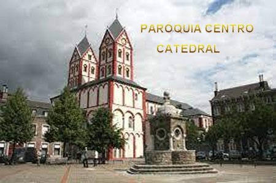
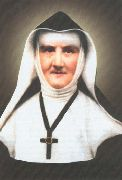
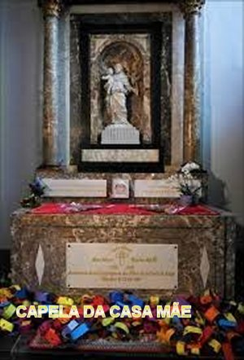

“FORÇA DO
AMOR”
UMA CONGREGAÇÃO RELIGIOSA
Com o falecimento do Pároco
Abade Cloes em 1830, exatamente ele que era um grande defensor da Escola
e suporte das duas irmãs, representou para elas uma
grande perca.
Todavia, ao em vez de abandonar os alunos, decidiram corajosamente alargar o ambiente
que os albergava a custa de imensos sacrifícios. No ano seguinte de 1831, quando
finalmente a Bélgica conseguiu se tornar independente da Holanda, a Escola
prosperou, e então, Jeanne considerou que havia chegado à hora de pensar e
estudar a possibilidade de construir uma Congregação Religiosa,
que ela guardava carinhosamente no fundo do coração.
Idealizando corajosamente e com
muitas orações, Jeanne assumiu a idéia e começou a trabalhar firme para Fundar uma Ordem
Religiosa que inclusive já havia escolhido o nome: "Filhas da Santa Cruz de Liège”. Com
a firme ajuda e supervisão do seu Diretor Espiritual, o Dignitário Eclesiástico da
Igreja de São Bartolomeu de Liège, Padre Jean Guillaume Habets, foram redigidas
as Cláusulas da Constituição. E sem perca de tempo, as atividades
iniciaram em Agosto de 1832, com o objetivo de organizar as escolas privadas,
para também prestar assistência aos presos, aos hospitais de carentes e dar
atendimento as missões. Mas as duas irmãs e o Padre (Abade) Habets, que era o
Diretor Espiritual e agora também como Conselheiro e Orientador, não realizaram
o projeto sozinho: naquela mesma sala em que funcionava a Escola gratuita,
utilizaram o espaço para reuniões e decisões. E assim, com interesse e alegria
logo foram surgindo entre os próprios freqüentadores da Escola, meninas-moças
interessadas em ajudar. E como elas, outras meninas de Liège que também
simpatizaram com o ideal divulgado, se juntou a elas, formando um grupo coeso e
comprometido. O Abade Habets, Confessor e Diretor Espiritual de Jeanne e Ferdinanda,
confirmou: "Elas tiveram
uma grande influência nos corações dos alunos e daqueles que buscavam algum auxílio,
sempre obtendo conversões notáveis. E o trabalho
de todos evoluiu e cresceu solidamente.
Em Setembro de 1833, na
igreja de Potay, Jeanne e Ferdinanda fizeram os seus votos perpétuos.
Como Jeanne tinha mais de 50 anos de idade foi preciso uma autorização
da Santa Sé para receber o hábito religioso. Veio a autorização
da Santa Sé e o senhor Bispo da Diocese, Dom Van Bommel, consagrou
Jeanne que assumiu o nome de “MARIA TERESA DO SAGRADO CORAÇÃO DE JESUS”. Foi assim que nasceu a
“Ordem Religiosa das Filhas da Santa Cruz de Liège", com absoluta simplicidade, e as jovens iniciantes, também fizeram os seus
votos perpétuos e receberam o traje inicial da Congregação, tornando-se religiosas.
A MÃO DE DEUS
Evidentemente, tudo isto aconteceu,
verdadeiramente pela bondade e providência do SENHOR DEUS, que é só amor e
misericórdia infinita, e inclusive, reservou para Jeanne muitos anos de vida,
permitindo que ela trabalhasse firme e produtivamente, quase até os últimos dias
da sua existência. Assim, NOSSO SENHOR não deixou nada inacabado e rapidamente
compensou o tempo perdido ou gasto por ela em outras atividades de caridade. Já
com o hábito de Madre Teresa do Sagrado Coração Jesus, ela revelou uma
disposição invejável, trazendo à realidade tudo o que seu coração possuía de
bom: a delicadeza, o verdadeiro zelo, a alegria, a disponibilidade, cuidando das
suas freiras que se deixavam mimar por aquela segunda mãe, uma ex-solitária
lançada ao serviço dos pobres. Por outro lado, também os pobres e doentes se
abandonavam corajosamente as mãos da Madre e das suas Irmãs, que com alegria e
competência atendiam a todos que necessitavam de ajuda.
para Jeanne muitos anos de vida,
permitindo que ela trabalhasse firme e produtivamente, quase até os últimos dias
da sua existência. Assim, NOSSO SENHOR não deixou nada inacabado e rapidamente
compensou o tempo perdido ou gasto por ela em outras atividades de caridade. Já
com o hábito de Madre Teresa do Sagrado Coração Jesus, ela revelou uma
disposição invejável, trazendo à realidade tudo o que seu coração possuía de
bom: a delicadeza, o verdadeiro zelo, a alegria, a disponibilidade, cuidando das
suas freiras que se deixavam mimar por aquela segunda mãe, uma ex-solitária
lançada ao serviço dos pobres. Por outro lado, também os pobres e doentes se
abandonavam corajosamente as mãos da Madre e das suas Irmãs, que com alegria e
competência atendiam a todos que necessitavam de ajuda.
PROBLEMAS E ESPÍRITO RELIGIOSO
Existiram os problemas, ocorriam às
dificuldades, da mesma forma como acontece na vida de todas as pessoas. Da mesma
maneira, ninguém conhece a tempestade que envolve e agita o coração, e às vezes
fica assombrado por uma assustadora "noite do espírito"; ajoelha,
busca tranquilizar o coração firmado na fé que lhe concede a vida, e então, é salva
apenas com uma Santa Oração ou com uma Direção Espiritual bem iluminada. Assim ela
trabalhou com segurança e sem temor, ensejando sempre a possibilidade real da
Congregação se expandir, crescendo decididamente na busca de horizontes até em
outros países, vencendo com o Terço nas mãos, todas as barreiras e obstáculos
que se elevavam na caminhada existencial.
Uma das suas motivações espirituais,
que a acompanhou por toda a vida, às vezes ela gostava de citar e até acostumava a
repeti-la: O Senhor apresenta
a Cruz com uma mão e a consolação com a outra”.
E também, guardava e pronunciava com
fervor, uma palavra de ordem e bom senso, que era cultivada com respeito e seriedade:
“Ide aos pobres com um coração
de pobre”.
O arcebispo da Bélgica reconheceu oficialmente
a “Congregação das Filhas da Santa Cruz
de Liège” em 1845 e aprovou as constituições em 1851.
 CARISMA DA CONGREGAÇÃO
CARISMA DA CONGREGAÇÃO
A nova Congregação tinha como prioridade
a educação das jovens, mas também se dedicava aos doentes em suas casas, às
mulheres prisioneiras, à catequese de crianças, de jovens e também de adultos, à
confecção de bordados, a ocupar das crianças durante o dia e dos idosos à noite.
E assim, trabalhando sério, as religiosas começaram a ser conhecidas na cidade.
Foram incumbidas de uma função especial de retenção das mulheres de uma casa
para reabilitação de prostitutas, e de uma casa de acolhimento para mendigos.
A procura por todos os serviços era tão intensa diariamente, que da mesma
maneira, pelas Graças do SENHOR DEUS, o número de Irmãs Religiosas sempre
aumentavam consideravelmente.
A finalidade do Instituto
era dar a JESUS CRISTO, que sofreu por nossa salvação, e a NOSSA SENHORA, MARIA
SANTÍSSIMA DOLOROSA, padroeira e protetora da congregação, glória e honra em
seus membros fracos e sofredores, como meninas pobres e doentes abandonados.
CARISMA PESSOAL
Com a permissão do Padre
Habets, Madre Maria Teresa fez o voto de imitar JESUS, como uma criança: "sofrer em silêncio até a morte".
Afirmou também com convicção: “Recolher em DEUS é uma felicidade inestimável”,
e também, delineou atitudes com objetivo de impulsionar as
suas filhas em poucas palavras:
“Faça por JESUS. Faça tudo por amor de DEUS. Trabalhe só para DEUS; ELE vê todos os
seus passos”!
DURANTE O JULGAMENTO CANÔNICO
Uma das irmãs testemunhou no
julgamento canônico: "Senti que
DEUS estava nisso e que Ela estava em DEUS."
Outra resposta da irmã:“Nossa Mãe era
como um ímã que atraía as almas e as atraía em sua ascensão a DEUS”. Essa influência da Madre Maria Teresa foi universal e constante. De fato, de 1838 a 1874,
a cada três anos, ela era reeleita Superiora Geral da Congregação por unanimidade de votos
das irmãs capitulares.
TRABALHO FIRME E FERVOROSO

Em 1841, a Congregação
também atendia os presos. O trabalho no ano seguinte levou à fundação de um
refúgio para convertidos e preparou as freiras para também aceitarem a direção
de um grande abrigo de mendigos em Reck-heim, em Limburg (1843), e do hospício
fundado na antiga abadia de Stavelot ( 1844), ao qual mais tarde acrescentaram
um abrigo para órfãos. A fundadora decidiu cuidar de muitas pessoas infelizes
porque, disse ela, “São almas
por quem o Senhor derramou todo o seu sangue”.
Em 1851, as Filhas da Cruz
estenderam também a Aspel, ao norte da Prússia Renana, um centro ideal para um
reformatório de moças, um noviciado e um centro de ação em vista de futuras
fundações. Quando a Madre Teresa chegou lá, ela imediatamente reconheceu com
emoção não apenas os lugares que ela vira em sonho há cerca de vinte anos antes,
mas até mesmo o jardineiro do castelo que ela possuía. Aspel foi o primeiro
fruto de quinze casas de educação e caridade fundadas na Alemanha.
Recomendado pelo Abade
Habets, as Filhas da Cruz também cruzaram os oceanos. Na verdade, elas se
estabeleceram em 1862 nas Índias Orientais e em 1863 na Inglaterra. Em todos
os lugares elas prosperaram porque foram dóceis às advertências de sua Superiora
geral e fiéis imitadores das suas virtudes. O Cônego Brémas, primeiro Capelão
das irmãs em Liège, fez esta reflexão: “A querida Madre não estudou os ascetas: as suas numerosas ocupações não lhe
deixavam tempo para ler. Onde, então, ela tirou aquele conhecimento dos Santos que ela
conhecia completamente? Sem dúvida, foi em sua união com JESUS EUCARISTIA. O Cônego
estava profundamente convencido. JESUS foi O seu mestre, SUA consolação e a SUA força”.
MORTE DE MADRE MARIA TERESA
A Madre Maria Teresa do Sagrado Coração de
Jesus, morreu no dia 7 de janeiro de 1876, bem próximo aos 99 anos de idade,
em Liège e foi sepultada no cemitério de Chénée, também na Bélgica.
De acordo com o processo Canônico,
cinquenta anos mais tarde o seu corpo foi exumado, como parte das providências,
verificações e declarações oficiais dos fatos, ocorrendo uma surpresa admirável:
“o seu corpo estava completamente
incorrupto”.
BEATIFICAÇÃO

Junto com este fato, circularam
notícias de um milagre realizado por DEUS através da sua preciosa interseção. Assim,
em 1911, foi instaurado o processo canônico para verificar, apurar e estudar os
acontecimentos, visando a Beatificação, em razão do milagre ocorrido. Desse modo
foram analisados e estudados todos os procedimentos, para serem comprovados os
aspectos do milagre, recebendo a aprovação preliminar da Igreja em Janeiro de
1991. Com o mencionado acontecimento, o processo para a Beatificação foi
encaminhado aos Cardeais, que depois de exaustivamente estudado e argumentado
aprovou o milagre e, encaminhou o processo para a decisão final do Papa João
Paulo II, que determinou a
“BEATIFICAÇÃO” no dia 21 de Abril de 1991.
Nesta época, as suas filhas já estavam espalhadas por diversas partes do mundo,
prestando benefícios ao povo em muitas regiões, e também tornando o seu carisma
vivo, brilhante e inesquecível.
A Congregação conta hoje com mais
de 103 “Comunidades Religiosas”
espalhadas em quatro continentes.
Provavelmente a “BEATA MARIA TERESA DO SAGRADO CORAÇÃO DE JESUS”
(Jeanne Haze), tenha se tornado a Beata mais
idosa da história da Igreja Católica, pois morreu aos 94 anos de idade, no dia 7 de
Janeiro de 1876, em plena atividade.
Seus restos mortais são venerados
desde o dia 21 de Abril de 1993 na
“Capela da Casa Mãe das Filhas da Santa Cruz”,
na rua Hors-Chateau, 49 em Liège, na Bélgica.


 PRÓXIMA
PÁGINA
PRÓXIMA
PÁGINA
PÁGINA
ANTERIOR
RETORNA
AO ÍNDICE